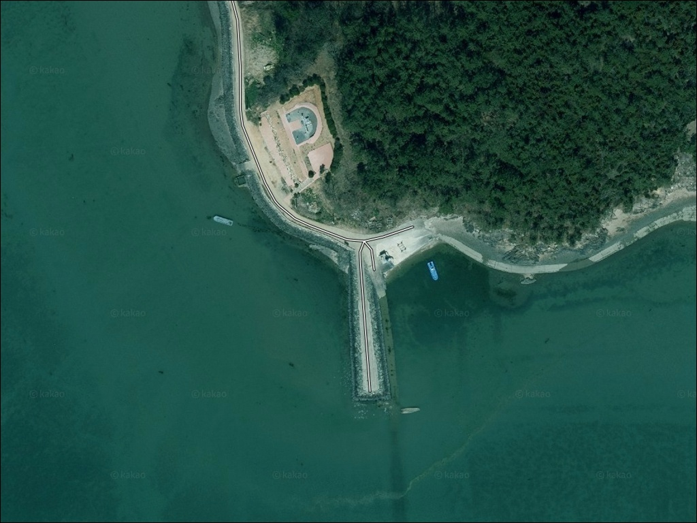
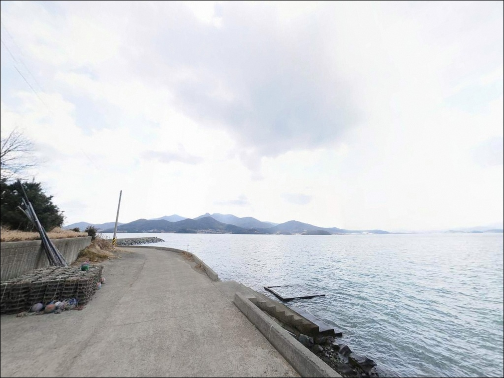
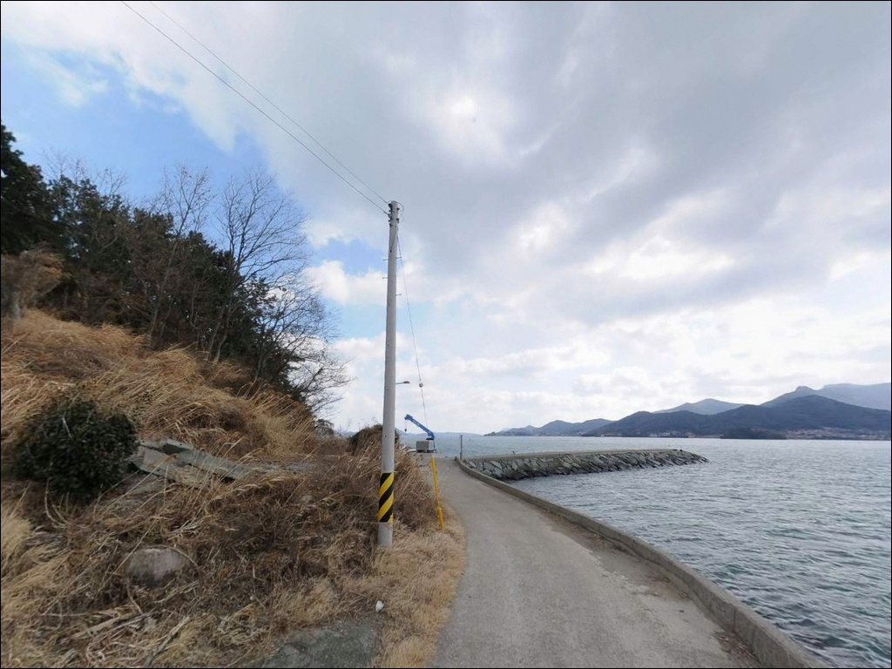
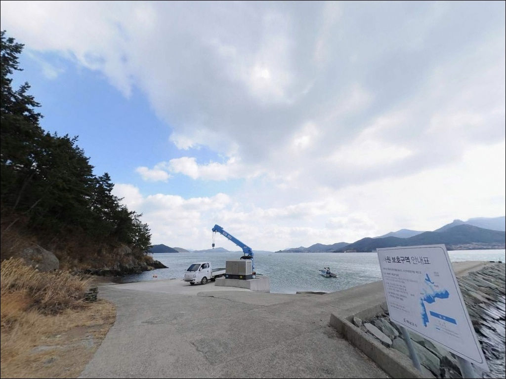
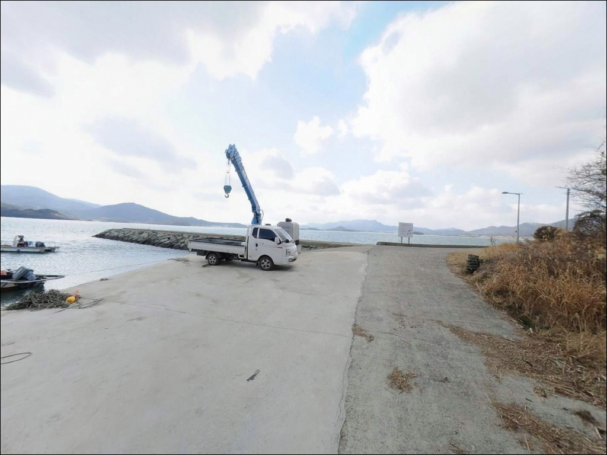
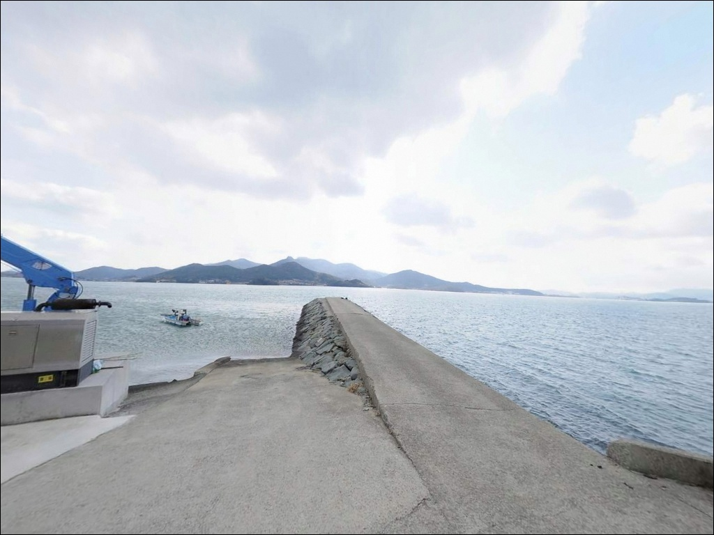
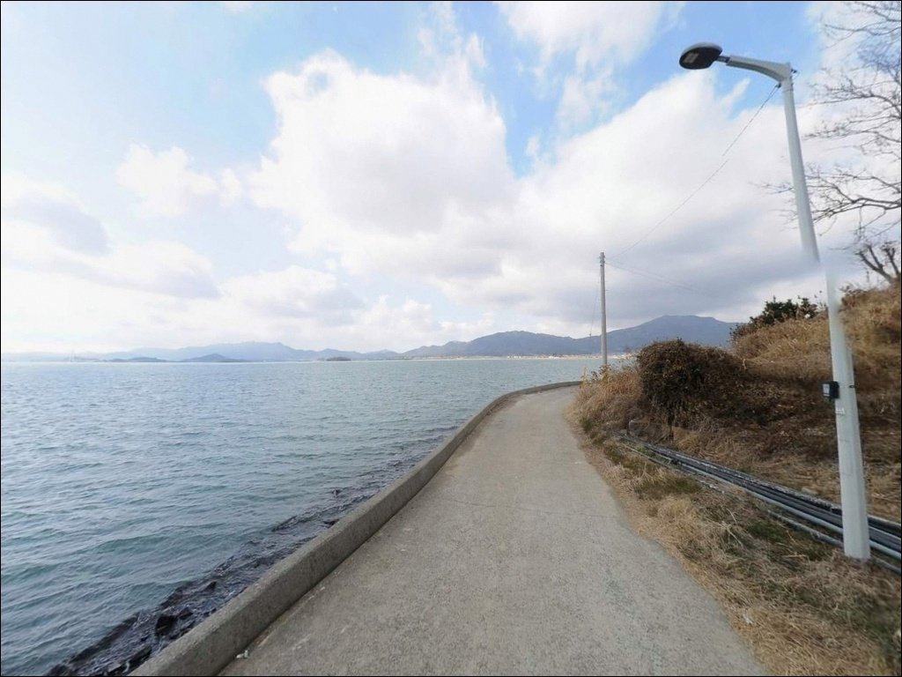
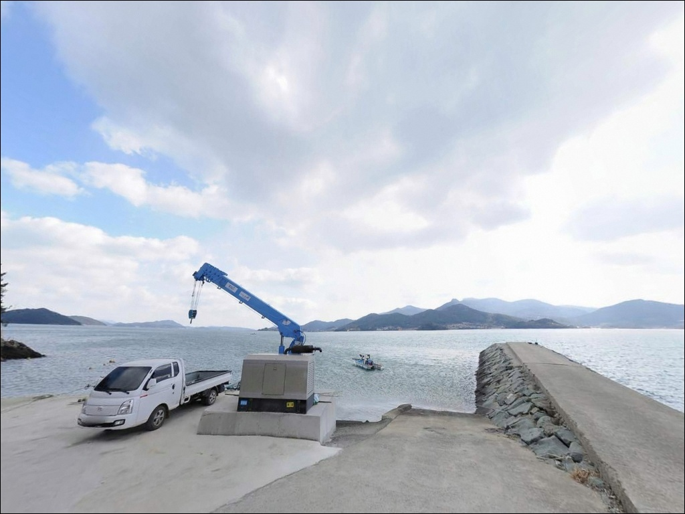
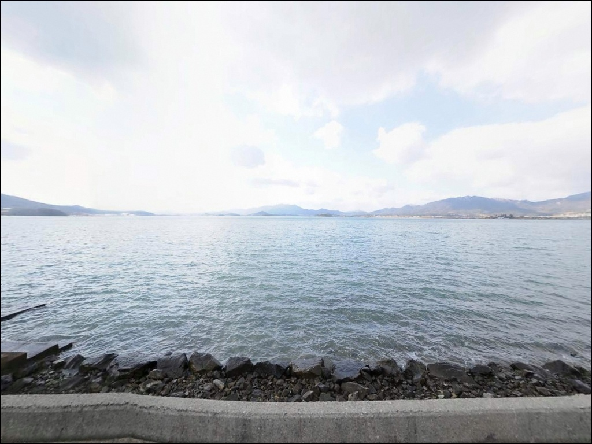

만수리방파제, 전남 해남군 시원한 바닷바람 맞는 방파제 차박 낚시 포인트
이 페이지에는 광고(제휴 링크 포함)가 있으며, 광고 링크를 통해 구매하면 운영자가 판매 수익 또는 수수료를 받을 수 있습니다. 포인트 사진: 카카오맵 스카이뷰·로드뷰. 이 페이지의 지도·사진 이미지는 카카오맵의 실제 서비스 이미지와 다를 수 있습니다.


포인트 안내
만수리방파제
전남 해남군 북일면 만수리 산 148-1
간조 때 이 방파제에 들어서면
수심이 너무 얕아 어떤 채비를 써도
제대로 운용되지 않습니다.
만조와 간조 차이가 뚜렷한 내만형 해역 특성상,
입장 타이밍이 조과를 결정하는 구조입니다.
전남 해남군 북일면 만수리,
완도군과의 사이 수로를 정면으로 마주 보는
남향 해안 마을에 자리한 소형 방파제입니다.
온라인에 낚시 정보가 거의 없는 비노출 포인트로,
직접 발품을 팔아야 하는 탐색형 성격의 포인트입니다.
이 글은
만수리방파제의
진입 환경, 차박 여건, 물때 판단 기준,
지형 기반 낚시 방식에 집중합니다.
조황 단정이나 특정 어종 보장은
이 글의 범위에 포함되지 않습니다.

1. 진입 동선과 포인트 접근성
만수리는 북일면 소재지 흥촌리에서
남쪽으로 이어지는 마을길을 따라 접근하는 구조입니다.
해안까지 고저차가 완만해
급경사 구간은 없는 편이지만,
마을 안쪽 도로는 1~1.5차선 수준으로
교행이 어려운 구간이 섞여 있습니다.
방파제 초입까지 포장도로로 진입이 가능하며,
방파제 앞 공터에서 회차가 됩니다.
주차 후보는 방파제 진입 직전 마을 끝단 공터와
마을 내 농로변 공간으로,
소형~중형 차량 기준 2~3대 수용 수준입니다.
농로와 인접한 마을 도로이므로
농기계나 어촌 주민 차량의 통행 동선을
막지 않는 자리를 우선으로 선택해야 합니다.
출발 전 위성지도로 진입로를 한 번 살펴두면
현장에서의 혼선을 줄일 수 있습니다.

2. 차박 환경과 야간 체류 여건
만수리는 산과 농지, 과수원이 대부분인
조용한 농어촌 해안 마을입니다.
심야 시간대 차량 통행이 많지 않아
소음 환경은 양호한 편이지만,
방파제 선단부에는 야간 인공조명이 없는 구간이라
헤드랜턴과 캠핑용 조명 확보가 필수입니다.
주차 공간 자체가 방파제 초입 공터로 제한되어
넓은 차박 공간을 기대하기는 어렵습니다.
낚시를 마치고 조용히 머무는 용도로는
나쁘지 않으나,
차박을 주목적으로 삼기보다는
낚시 후 1박 체류 개념에 가깝습니다.
마을 안쪽 민가와 적당히 거리가 있는
해안 쪽 공터를 자리로 잡는다면
프라이버시 확보는 가능한 구조입니다.
완전한 암흑 환경은 아니므로
야간에 낚시를 병행할 계획이라면
조명 장비를 충분히 챙기는 편이 안전합니다.


3. 주변 편의시설 및 인프라 현황
만수리방파제 바로 주변에는
편의점이나 식당을 기대하기 어렵습니다.
완전 자급 체제로 진입하는 것이 기본이며,
식수, 얼음, 낚시 소품, 연료는
모두 출발 전에 갖춰야 합니다.
북일면 소재지 방향으로 약 5km 이동하면
세븐일레븐 해남북일점을 이용할 수 있습니다.
북일면 및 북평면 소재지 방향으로
차로 10~15분 거리 안에
마트·식당·주유소 등 기본 생활 인프라가
갖춰져 있습니다.
완도대교 방향으로 약 13km,
해남읍까지는 약 17km 거리입니다.
응급 상황이나 장비 추가 구입이 필요할 때는
이 동선을 기준으로 이동하는 편이 효율적입니다.
북일면 보건지소(흥촌리)는
평일 낮 시간대에만 운영됩니다.

4. 진입 전 반드시 챙겨야 할 준비사항
만수리방파제 방문 전에 가장 먼저 확인할 것은
물때입니다.
내만형 해역 특성상
간조 시 수심이 급격히 낮아지는 구조로,
사리 간조 때 진입하면 낚시가 어려운 환경이 됩니다.
바다타임에서 북일면 일대 물때를 확인하고
만조 전후 2~3시간을 노려
입장 시각을 잡는 것이 기본 전략입니다.
출조 전 해남 북일면 일대 또는
완도대교 방면 조황을 먼저 검색해보시길 권합니다.
만수리방파제 자체 조황 정보는 거의 없어
인근 해역 패턴을 참고하는 것이
현실적인 준비 방식입니다.
암반·뻘 혼재 지형 특성상 채비 손실이 있으니
여분 채비는 넉넉히 챙기는 편이 좋습니다.
원투낚시란 무거운 봉돌을 달아
먼 거리로 채비를 던진 뒤
바닥층 어종을 노리는 낚시 방식입니다.
방파제 선단부 외항 쪽 석축 주변은
이끼가 끼어 있을 수 있어
미끄럼 방지 신발과 구명조끼는 필수입니다.
야간 입장 시 헤드랜턴도 반드시 챙깁니다.

5. 물때에 따라 낚시 여건이 달라지는 이유
만수리방파제가 자리한 해남 북일면 앞바다는
완도군과의 사이 수로를 직접 맞는 구조입니다.
완도-해남 해협은 조류 소통이 꾸준한 수로성 해역으로,
만수리 앞 해역도 이 조류 영향권에 포함됩니다.
들물과 썰물 전환 시점에 조류 흐름이 살아나는
전형적인 수로형 패턴입니다.
방파제 지형 특성상 끝단에서 수심이
상대적으로 급하게 깊어지는 구조입니다.
만조 기준 3~4m 내외의 수심을 유지하지만
간조 시에는 전방으로 갯벌과 얕은 여밭이
드러나는 수준까지 낮아집니다.
만조 전후 타이밍이 이 포인트의 핵심 진입 기준이며,
물때를 벗어난 입장은 조과를 기대하기 어렵습니다.
바닥 지형은 암반과 뻘이 혼재한 형태입니다.
방파제 선단부 외항 쪽은 조류 흐름이 닿는 구간이고,
내항 측은 정체된 수역으로 어종 성격이 다릅니다.
어종은 단정하기 어렵지만,
이 일대 해역 패턴에서는
감성돔·우럭·붕장어·숭어·도다리·학공치를
기대해 볼 수 있는 지형 구조입니다.
가을에는 망둥어 출몰 패턴이 북일면 해안 전반에서
나타나는 편입니다.
출조 전에 최신 조황은 꼭 검색해 보시기 바랍니다.


6. 포인트에 어울리는 낚시 스타일
이 포인트의 지형에 가장 잘 맞는 방식은
원투낚시입니다.
방파제 선단 외항 쪽으로 채비를 멀리 보내
암반과 뻘이 혼재한 바닥층을 탐색하는 방식이
이 해역 구조에 적합합니다.
만조 전후 조류가 살아 있을 때
시도하는 것이 원칙입니다.
릴찌낚시(흘림낚시)도 어울리는 방식입니다.
조류가 일정하게 흐르는 타이밍에
방파제 끝단에서 찌를 조류에 태우는 방식으로,
수로성 해역 특성과 잘 맞는 공략법입니다.
방파제 끝단과 꺾이는 지점을 우선 공략하면
효율이 높습니다.
야간에는 방파제 주변 석축과 구조물 근처를
소형 루어로 탐색하는 라이트게임도
시도해 볼 만합니다.
방파제 발 앞 내항 측은
소형 지그헤드 채비로 볼락류를 노리기 적합하고,
외항 선단부 방향은
야간 우럭 루어 탐색에 어울리는 구조입니다.

7. 대안 포인트와 플랜 B 동선
만수리방파제 조류가 너무 강하거나
간조로 낚시 여건이 되지 않을 때는
같은 북일면 해안선의
내동항이 첫 번째 대안입니다.
지방어항으로 등록된 곳으로
방파제와 선착장 구조가 갖춰져 있어
원투·찌 모두 운용 가능합니다.
완도대교 방향으로 약 13km 이동하면
완도-해남 수로 해역을 직접 노리는
대규모 낚시 거점을 이용할 수 있습니다.
완도대교 인근 석축 선착장 일대는
현지 낚시점에서 조황 확인과 미끼 구입이 가능해
초행이라면 이곳을 기점으로 잡고
만수리방파제를 병행 탐색하는 동선이 효율적입니다.
차박 공간이 여의치 않다면
완도대교 인근 공용 주차 구역이
넉넉한 대안입니다.
낚시 여건도 겸비한 구간이라
차박과 낚시를 동시에 해결할 수 있습니다.
어란진 방파제나 땅끝항 방파제도
반경 10km 내 검토 가능한 대형 포인트입니다.

발품을 팔아야 하는 조용한 포인트,
만수리방파제
원투낚시나 릴찌낚시를 즐기는 낚시인 중
온라인에 정보가 없는
한적한 포인트를 선호한다면,
만수리방파제의 지형 구조는
충분히 검토해볼 만한 조건입니다.
완도-해남 수로 해역을 품은 남향 입지와
암반·뻘 혼재 바닥은
다양한 낚시 방식을 시도하기에 적합한 구조입니다.
다만 만조·간조 타이밍을 계산하지 않고 진입하거나,
자급 준비 없이 방문하면
낚시 전에 먼저 난관을 맞닥뜨립니다.
물때 확인, 자급 체제, 진입로 사전 점검,
이 세 가지를 갖추고 찾는다면
아직 덜 알려진 포인트를 먼저 탐색하는
의미 있는 출조가 될 수 있습니다.
조용한 농어촌 해안 마을에서
수로 조류를 옆에 두고
하룻밤 머무는 차박 낚시라면,
만수리방파제는 충분히 기억에 남을
조용한 스팟이 될 수 있습니다.